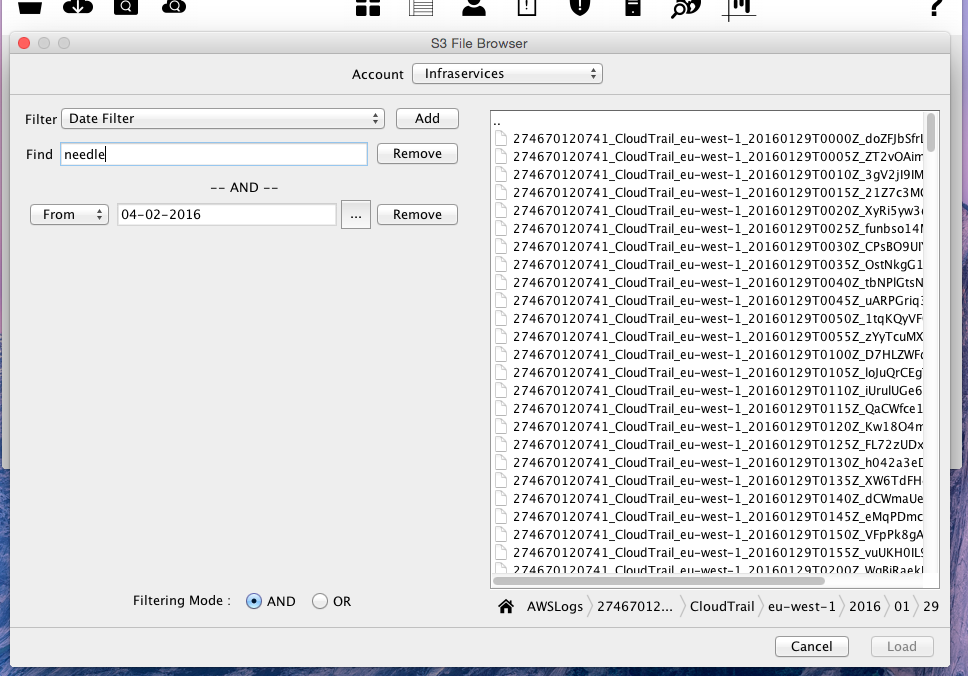

Loading Events
What is an Event? An Event describes a Single API call made with the AWS ecosystem. CloudTrail groups events that took place in a five minute period into files. Depending on how active your AWS account is this will be at least one file.
CloudTrail Viewer can load these events from two locations, the local file system or from an S3 bucket.
Events in these files can be loaded and processed by CloudTrial Viewer in two different ways. You can either load the complete file and all of its events, or you can search with the file for events that match a defined criteria.

 Full Load
Full Load
Performing a Full Load will load every event in every file that you choose. To load complete files you use the two icons to the left of the toolbar. The Folder icon loads files from the local filesystem, the cloud will load file from an S3 bucket.
Loading complete files is useful when something has happened at a particular time and you want to see a flow of all activity across all services at that time. Loading complete files allows you to analyse your usage by seing how many EC2s have been started in that timeframe and what instance sizes they are.
Loading all the events in multiple files is memory intensive. It is not recommended that you load more than 100 files at the same time, though this is dependant on how busy your account is and how many events the files contain.

 Scan
Scan
Scanning events is useful when you are only interested in finding specific events, such as what actions has User x performed, how did a rule get added to that Security Group, or who deleted my RDS! The two icons to the left of the toolbar that have a magnifying glass are used to perform the Scan operations.
When performing a Scan only the files that contain the required string or filter criteria will be loaded. Not having the memory constrainsts of loading every event in a file Scanning allows you to search days, weeks, and even months of log files for what you need.
- The scan functionality for Local files is very basic, enter a string, then choose the local file(s). This 'needle' which match against any field in the event.
- The scan functionality for S3 file(s) is more advanced, as described below.
S3FileChooser
The S3FileChooser is a dialog that works similar to a standard FileChooser Dialog, but is designed to display and allow the selection of one or more files located in an S3 bucket. From the top of the dialog it is possible to change between different AWS accounts that you may have configured. If no AWS Accounts have been configured the dialog will not display and a warning advising you to register an AWS Account will be displayed.
The Dialog consists of two sections
- The Filter Pannel
- The FileChooser Panel

Filter Panel
The Filter Panel is located on the left side of the S3FileChooser dialog.
At the top of the Filter Panel is a dropdown control consisting of several filters and an Add button. The types of Filters that you can choose from include:
- Text Filter : This allows you to search the whole CloudTrail event for a specific string, the same as doing scan on the local filesystem.
- Date Filter : This filter allow you to defined a from/to date that you are interested in searching from/to. Add a To and From and search between two dates.
- Ignore Filter : This filter will ignore all events that have been defined in the Ignore Scan section of preferences.
- The other filters allow you to filter on a specific fields of a CloudTrail event.
You can choose how the filtering process works by selecting either AND or OR at the bottom of the panel.
FileChooser Panel
The filechooser panel works as a normal File Chooser, allowing you to select one or more files to be loaded. The load button will only enable when at least one filter has been defined correctly.
When performing a scan it is possible to select a folder and all files contained in that folder (and sub-folders) will be loaded and scanned.